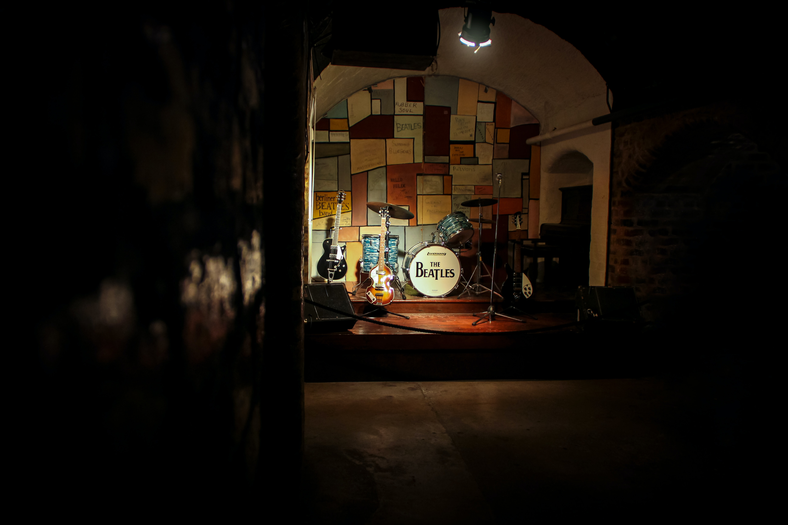
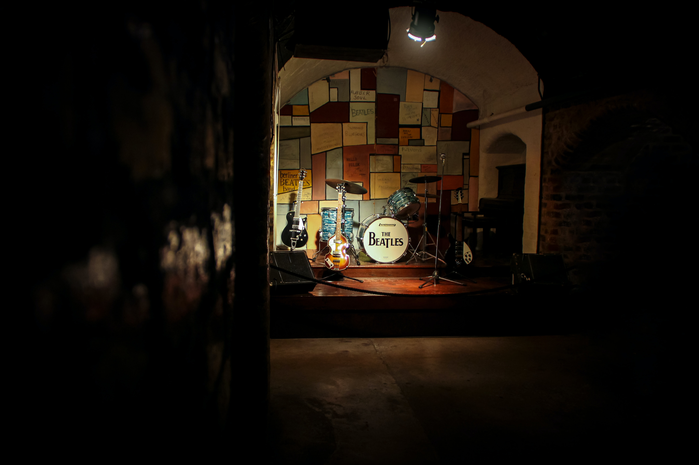

| flatform | id/link |
|---|---|
| @choeghost | |
| blog | choeghost.com |
| youtube | .com |
Information : Hello I am a 21 year old ChoeGhost who loves music. This website was created to introduce myself.
시이나링고(도쿄지헨) : 쨍한 목소리에 호소성이 담겨있다. 그 호소성에 저절로 빠져드는 느낌을 좋아한다. 진짜 음악을 하는 사람인 거 같다. 악마의 목소리로 들리기도 한다. 도쿄지헨의 음악 스타일을 좋아한다. 뻔하지 않은 전개와 뻔하지 않은 가사가 좋다.
 
오피셜히게단디즘 : 토할 거 같을 정도로 벅차오를 때가 있다. 처음엔 이 노래가 왜 좋다는거지? 라고 생각했었는데 사람들이 많이 듣는 데에는 이유가 있었구나 싶다. 수능 공부하면서 진짜 미친듯이 빠졌었다. 공부하다가 벅차서 눈물이 주륵주륵 났던 때도 있었다. 처음으로 가사의 중요성을 느끼기도 했다. 일본어라 처음엔 음악의 전개가 너무 좋다 .. 이러면서 들었었는데 가사와 매치해가며 들으니 미친듯이 좋았다. 가슴이 쿵쿵 뛰었다. 나를 밴드부로 이끈 곡이기도 하다. 후지하라 사토시라는 보컬/작사/작곡 멤버의 노력에도 감동했다. 나도 하고싶다! 고 강렬한 생각이 들었다. 특히 '이단스타' 라이브 영상을 보고 제대로 결심했다. 그 땐 진짜 음악만 바라보며 살았다.
Hata Motohiro : 목소리부터 사람 죽이고 간다. 목소리가 예쁘다. 비 오는 날의 옥구슬같은 목소리다. 보통 이런 표현은 여자 목소리?에 쓰지만 이분은 남자분이다. Rain과 도라에몽 주제곡인가? 그게 유명한데 나는 Ai라는 곡을 되게 좋아한다. 뭔가 화려한 기술이 들어가진 않았지만 그래서 담백한 노래들이 울게 만든다.
오오이시 마사요시 : 디펫님이 알려준 분이다. 기타 치며 노래부르는 모습은 환상적이다. 땀이 나지 않지만 땀이 나는 거 같은 기분이다. 정말 즐기면서 음악을 한다는 걸 느낄 수 있고, 기타 연주 실력에 반했다. 특히 story라는 곡은 내 인생에서 평생 잊을 수 없는 곡일 거 같다. 얘 또한 벅차오르게 한다.
Vaundy : 천재적이라는 생각만 든다. 물론 그만큼 노력을 하였겠지만. 시인님의 말씀처럼 그 사람의 작품 세계는 그 사람의 한계라고 생각하는 나에게 이 사람의 음악은 도대체 한계가 어디지? 라는 생각이 들게 했다. 매번 다른 스타일, 그러나 확고한 목소리로 잡은 특색. 그 모든 것들이 설레게 한다. 호소력 또한 미쳤다. 처음 알게된 뒤 한동안 앨범을 돌려가며 계속 들었었다. 실망시키지 않는 뮤지션.
후지이 카제 : 내가 가장 음악에 빠져있던 시기에 들었던 노래가 청춘병이었다. 일단 목소리가 너무 좋았지만 라이브보단 음원이 더 좋긴 하더라. 아무튼 난 라이브보단 음원이 좋으면 됐다는 생각을 가지고 있기에 나에게 있어선 최고의 뮤지션이다. 먼저 피아노를 신들린 것 마냥 친다. 피아노를 다루는 나이기에.. 더 눈이 갔다. 그리고 작곡. 비슷한 느낌의 곡들이지만 그 안에 있는 변화들과 가사들이 감동을 준다. kaerou 는 진짜 .. 미쳤었다. 사랑했다. 요즘 한국에도 꽤나 전파된 거 같던데.. 유튜브에 가끔 뜬다. 역주행했다고 !!! 흠!! 아무튼 그 곡보단 다른 곳들이 더 좋지만...... 사랑한다
키린지 : 키린지의 ailen은 명곡 중에 명곡. 역시나 벅차게 하는 전개. 모든 곡들에서 키린지의 색깔이 뚝뚝 떨어진다. 오래도록 사랑받는 데는 이유가 있는건가. 쿼럼센싱 채널에서 처음 접했지만 사실 들어본 곡이었다. 그것도 분명 행복이겠죠 라는 곡을 가장 좋아한다.
우효 : 순수하게 목소리 자체로도 울림을 줄 수 있다는 걸 느끼게 해줬다.
기리보이 : 기리보이 랩?은 잘 모르겠지만... 곡의 컨셉, 가사, 전개 등의 프로듀싱 능력을 존경한다. 특히 영화같게 앨범을 좋아한다.
헤이즈 : 초등학교 시절부터 좋아했는데,, 어느새 누구나 다 아는 사람이 되어있어서 신기했다. 유명한 곡들 말고도 앨범 전체의 컨셉, 전개가 굉장히 좋다. 첫번째 트랙에 늘 들어가는 연주곡을 특히 좋아한다.
creephyp : 특색으로는 짱먹는 밴드. 목소리가 미쳤다.

오피셜히게단디즘 : 토할 거 같을 정도로 벅차오를 때가 있다. 처음엔 이 노래가 왜 좋다는거지? 라고 생각했었는데 사람들이 많이 듣는 데에는 이유가 있었구나 싶다. 수능 공부하면서 진짜 미친듯이 빠졌었다. 공부하다가 벅차서 눈물이 주륵주륵 났던 때도 있었다. 처음으로 가사의 중요성을 느끼기도 했다. 일본어라 처음엔 음악의 전개가 너무 좋다 .. 이러면서 들었었는데 가사와 매치해가며 들으니 미친듯이 좋았다. 가슴이 쿵쿵 뛰었다. 나를 밴드부로 이끈 곡이기도 하다. 후지하라 사토시라는 보컬/작사/작곡 멤버의 노력에도 감동했다. 나도 하고싶다! 고 강렬한 생각이 들었다. 특히 '이단스타' 라이브 영상을 보고 제대로 결심했다. 그 땐 진짜 음악만 바라보며 살았다.
Hata Motohiro : 목소리부터 사람 죽이고 간다. 목소리가 예쁘다. 비 오는 날의 옥구슬같은 목소리다. 보통 이런 표현은 여자 목소리?에 쓰지만 이분은 남자분이다. Rain과 도라에몽 주제곡인가? 그게 유명한데 나는 Ai라는 곡을 되게 좋아한다. 뭔가 화려한 기술이 들어가진 않았지만 그래서 담백한 노래들이 울게 만든다.
오오이시 마사요시 : 디펫님이 알려준 분이다. 기타 치며 노래부르는 모습은 환상적이다. 땀이 나지 않지만 땀이 나는 거 같은 기분이다. 정말 즐기면서 음악을 한다는 걸 느낄 수 있고, 기타 연주 실력에 반했다. 특히 story라는 곡은 내 인생에서 평생 잊을 수 없는 곡일 거 같다. 얘 또한 벅차오르게 한다.
Vaundy : 천재적이라는 생각만 든다. 물론 그만큼 노력을 하였겠지만. 시인님의 말씀처럼 그 사람의 작품 세계는 그 사람의 한계라고 생각하는 나에게 이 사람의 음악은 도대체 한계가 어디지? 라는 생각이 들게 했다. 매번 다른 스타일, 그러나 확고한 목소리로 잡은 특색. 그 모든 것들이 설레게 한다. 호소력 또한 미쳤다. 처음 알게된 뒤 한동안 앨범을 돌려가며 계속 들었었다. 실망시키지 않는 뮤지션.
후지이 카제 : 내가 가장 음악에 빠져있던 시기에 들었던 노래가 청춘병이었다. 일단 목소리가 너무 좋았지만 라이브보단 음원이 더 좋긴 하더라. 아무튼 난 라이브보단 음원이 좋으면 됐다는 생각을 가지고 있기에 나에게 있어선 최고의 뮤지션이다. 먼저 피아노를 신들린 것 마냥 친다. 피아노를 다루는 나이기에.. 더 눈이 갔다. 그리고 작곡. 비슷한 느낌의 곡들이지만 그 안에 있는 변화들과 가사들이 감동을 준다. kaerou 는 진짜 .. 미쳤었다. 사랑했다. 요즘 한국에도 꽤나 전파된 거 같던데.. 유튜브에 가끔 뜬다. 역주행했다고 !!! 흠!! 아무튼 그 곡보단 다른 곳들이 더 좋지만...... 사랑한다
키린지 : 키린지의 ailen은 명곡 중에 명곡. 역시나 벅차게 하는 전개. 모든 곡들에서 키린지의 색깔이 뚝뚝 떨어진다. 오래도록 사랑받는 데는 이유가 있는건가. 쿼럼센싱 채널에서 처음 접했지만 사실 들어본 곡이었다. 그것도 분명 행복이겠죠 라는 곡을 가장 좋아한다.
우효 : 순수하게 목소리 자체로도 울림을 줄 수 있다는 걸 느끼게 해줬다.
기리보이 : 기리보이 랩?은 잘 모르겠지만... 곡의 컨셉, 가사, 전개 등의 프로듀싱 능력을 존경한다. 특히 영화같게 앨범을 좋아한다.
헤이즈 : 초등학교 시절부터 좋아했는데,, 어느새 누구나 다 아는 사람이 되어있어서 신기했다. 유명한 곡들 말고도 앨범 전체의 컨셉, 전개가 굉장히 좋다. 첫번째 트랙에 늘 들어가는 연주곡을 특히 좋아한다.
creephyp : 특색으로는 짱먹는 밴드. 목소리가 미쳤다.